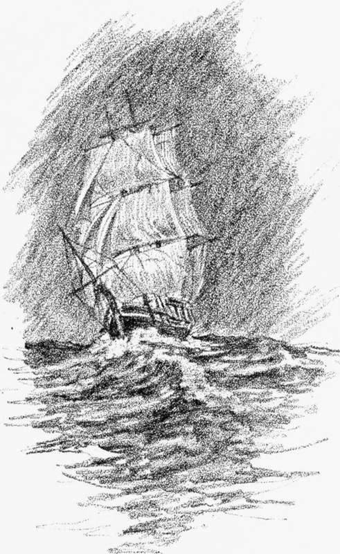

A Mysterious Affair. An Episode Of The Thirties. Continued
Description
This section is from the book "Stories Of Old Sydney", by Charles H. Bertie.
A Mysterious Affair. An Episode Of The Thirties. Continued
" The fate of the officers and their unfortunate ladies is wrapped in the most appalling uncertainty. We derive some consolation, however, from the fact, that cold-blooded butchery is the reverse of the long-established character of British soldiers. They are humane and forbearing, even to their foes; and to their friends, their countrymen, their officers, and their countrywomen, it is difficult to conceive them capable of brutality or assassination. One thing appears but too certain: if they retained possession of the ship, it would be essential to their own supposed safety to get rid of all who were not in the plot. The mildest mode of disposing of these would be to land them at New Zealand or some other island, with a liberal stock of provisions and conveniences; but even this would be a cruel lot, attended with privations, hardships, and perils which one shudders to imagine.
" But there is yet a gleam of hope from the consideration that out of so large a body of soldiers as one hundred and sixty privates and non-commissioned officers, with fifteen women and thirty-nine children, it is impossible to believe there were not a considerable number who remained faithful to their duty. This would add seriously to the embarrassments of the mutineers, and it is by no means impossible that cool reflection might convince them of the madness of their conduct, and that such conviction, seconded by the entreaties of those around them, might issue in a penitent surrender. Nor would it, indeed, be at all surprising, were the loyal party to conquer in their turn, and, in a few days hence, to re-enter Sydney Cove."
A few days after this account was published the good people of Sydney received another shock. One part, at least, of the editor's prophecy came true ; the York did " re-enter Sydney Cove," and this is the story of Captain Leary:-
" On Sunday, the 27th tilt., Captain Leary of the York dined with Captain Gilbert on board the Edwardt and returned to his own ship in the evening, after arranging for the signals to be made during that night. This was the last personal intercourse they had. The wind was then N.E.
" On Monday, the 28th, no communication took place, and the wind continued steady from the N.E.
" On Tuesday, the 29th (the memorable day on which Captain Gilbert supposed the York to be captured), about 3 o'clock in the afternoon. Captain Leary, finding the wind so unchangeably contrary, began to think seriously of putting back for Bass' Straits. Not willing to act unadvisedly, he called a meeting of the military officers and stated that, the wind appearing to have settled in the X.E., they might be kept where they were for a length of time; but that if they steered to the southward, they would in four or five days be carried through Bass' Straits, with every prospect of a good passage, and without the anxieties and dangers of Torres' Straits. Major Hunt and the other officers being exactly of the same opinion, the alteration was at once adopted and acted upon. Signals were immediately made to the Edward, announcing, as plainly as such signs could, the change that had been determined upon. The first was to this effect-'Excuse me, I'm under orders to go through Bass' Straits.' The second was the hoisting of the ensign, the usual signal for parting, equivalent to the word ' Farewell.' The third was the discharge gun, the ordinary accompaniment, at sea, of the Farewell ' ensign, being, we suppose, the best substitute for a heart)- shaking of hands. These intimations completed, the Edward hoisted her pennant, the sign that the signal had been understood. Leary, not doubting that he had made his companion clearly acquainted with his intentions, now put his ship about, and steadily pursued his course to the southward. ( )bserving that the Edward had put about also, the gentlemen nf the York believed that Gilbert had come to the same conclusion as themselves, namely, that it was better to make for Bass' Straits than to contend with a settled foul wind; and Leary good-humouredly remarked to the officers, 'Instead of Gilbert's lending me through Torres' Straits, I'll lead
"And left them at three in the morning " him through Bass' Straits.' At night, as was stated by Gilbert, the Edward neared the York and hailed her; proper answers were returned, but the former being to windward, and the sea running high, Gilbert could not hear them.
" On Wednesday morning, about 3 o'clock, the York was hailed again, when Captain Leary, Major Hunt, and the chief officer of the ship went on to the poop fo know what was the matter. The "man dressed in a long frock coat,' whom Gilbert took for one of the mutineers, was Major Hunt. Gilbert called out that Leary was steering wrong, and told him to lower down a boat and come on board of him, that he might point out where he was wrong. Leary was rather nettled at such an imputation of ignorance, and replied that he (Gilbert) must suppose him mad, not to know so simple a navigation as that to Bass' Straits ; and, taking Major Hunt down to the cabin, he pointed out to that gentleman on the chart the exact spot they were then on, and the course they were steering.
" It never entered their heads that Gilbert could be ignorant of their intentions, taking it for granted that their signals had been distinctly understood by him. His repeated hailings, his calling so vehemently for Captain Leary, and his persisting in telling them they were wrong, appeared to those on board the York quite as puzzling as their own proceedings appeared to him, and at length they determined to get as near him, as, in so rough a sea, the safety of both vessels would permit, for the purpose of holding more intelligible communication. Their effort was frustrated, as our readers know, by Gilbert's supposing them to be a set of mutineers, and that this was a manoeuvre to board and take possession of his ship. Away, therefore, he went, each party wrondering at the strange conduct of the other."
Thus did the mysterious affair lose its mystery, and the honour of the 57th remain untarnished. Unfortunately, the Edzvard had sailed before the York returned, and I have little doubt that the story of the mutiny of the 57th, told by the officers of the Edward in Batavia, is still rolling round the world, for truth can never catch a lie. Our editor pours out half a column of healing oil to the " brave men of the 57th," and concludes by " wishing them a prosperous voyage and every happiness in their future life," which, let us hope, they had.
Continue to: